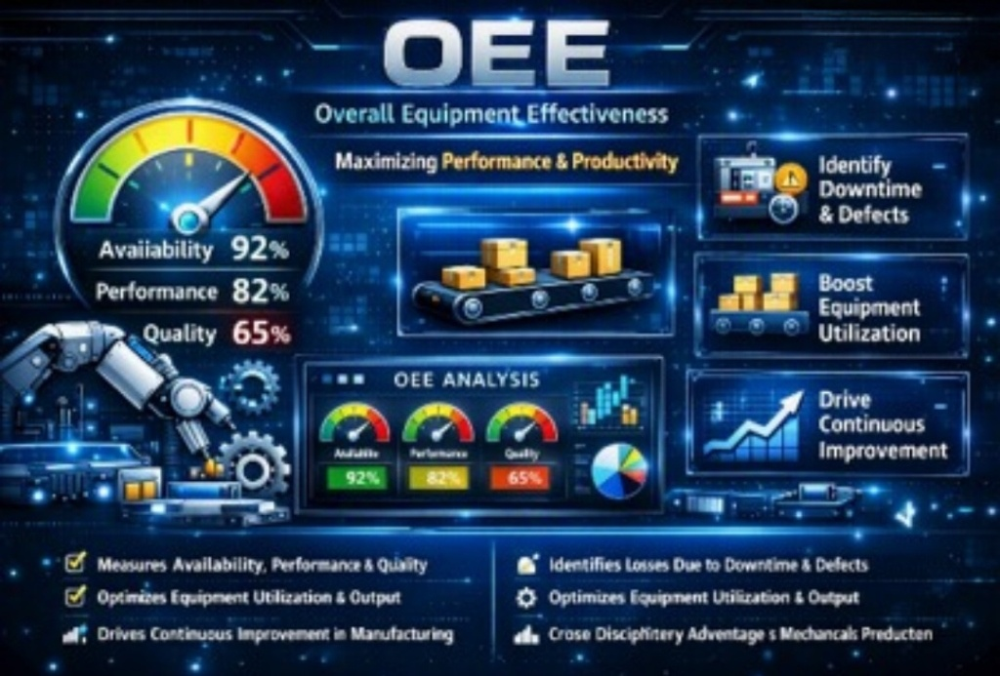
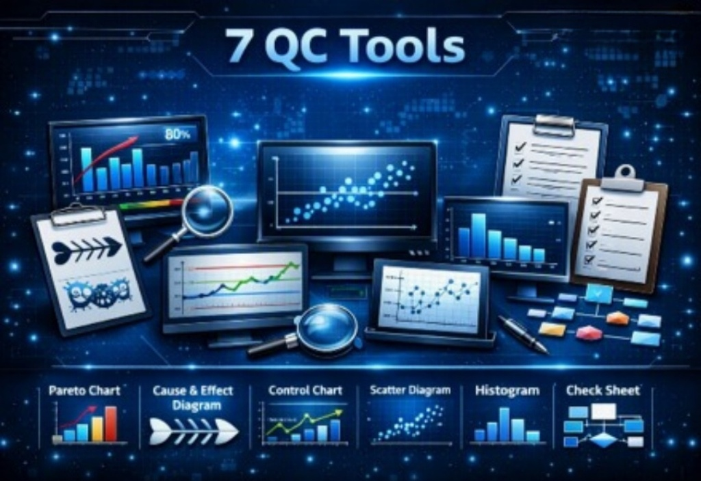

Master shop-floor problem solving, 7 QC Tools, Six Sigma DMAIC, OEE optimization, and world-class manufacturing frameworks with IIT & IIM alumni mentorship.
Transforming engineering graduates into high-impact plant leaders with proven continuous improvement frameworks.
Career Roles: Quality Assurance (QA/QC) Engineer, Six Sigma Specialist, ISO 9001/IATF 16949 Auditing, and Process Improvement Lead.
Career Roles: Production Planning & Control (PPC), Workflow Optimization Engineer, and Error-Proofing Quality Engineer.
Career Roles: Lean Manufacturing Specialist, Operations Manager, Line Balancing Engineer, and Assembly Efficiency Lead.
Career Roles: Continuous Improvement (Kaizen) Champion, Industrial Engineer, Operations Consultant, and Process Design Lead.
Students gain hands-on, practical exposure to actual Lean tools, simulation kits, and dashboards used in world-class manufacturing factories.
Globally recognized Lean Six Sigma and World-Class Manufacturing credentials that significantly enhance employability in top MNCs.
PDCA, Kaizen, and TIMWOODS frameworks cultivate systematic problem-solving instincts to prepare students for rapid managerial promotions.
Mechanical, Production, Electrical, and Industrial engineers acquire unified Lean operational competencies highly sought after across sectors.
Direct practical access to live OEE digital dashboards, authentic 7 QC Tool calculation kits, physical Kanban visual boards, and sensor-based Poka-Yoke error-proofing setups right in your college laboratory.
Master the standard operating principles and implementation toolkits driving global manufacturing excellence.

The gold standard for measuring shop-floor manufacturing productivity and equipment health.

Universal data-driven statistical tools for systematic problem solving and defect elimination.

Visual pull-based workflow management system to eliminate shop-floor inventory bottlenecks.

Ingenious Japanese engineering mechanisms to guarantee 100% defect-free production.

Continuous flow manufacturing to eliminate Work-In-Progress (WIP) and compress lead time.

Structured methodology to hunt and eradicate the 8 deadly wastes in any operational process.

Real-time visual problem reporting to halt defect propagation and escalate line issues.

Time study and pacing analytics to balance line speeds with client demand rates.

Theory of Constraints (TOC) to identify and debottleneck capacity-limiting operations.

The Deming scientific cycle for perpetual, disciplined organizational learning and growth.

Sort, Set in Order, Shine, Standardize, and Sustain for an immaculate, visual workspace.

End-to-end strategic visual mapping of information and material flow across operations.
Upskill your engineering students or manufacturing teams with practical, shop-floor-tested Lean & Six Sigma modules taught by industry veterans.